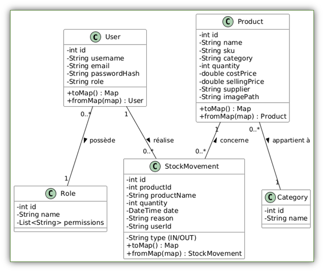
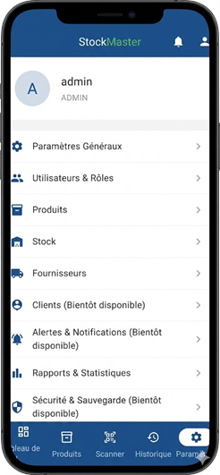
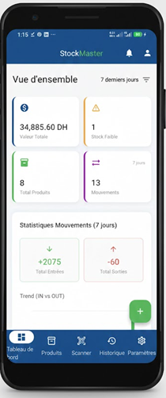
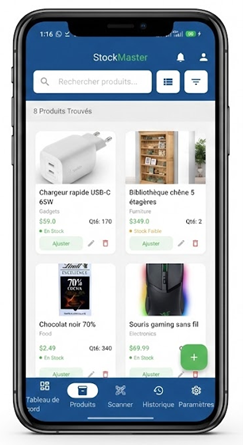
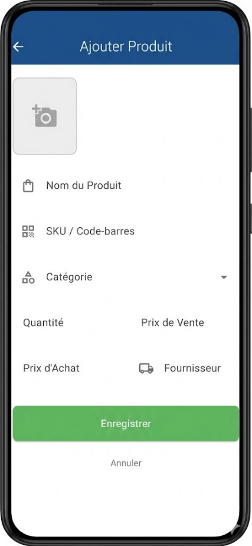
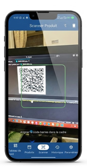
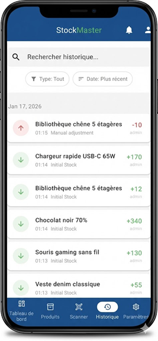
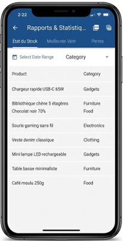
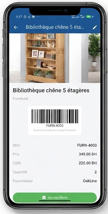

Ingénierie Informatique & Réseaux
StockMaster
L'intelligence au service
de votre Inventaire.
Une solution mobile autonome et intuitive, conçue pour digitaliser et sécuriser la logistique des TPE/PME.
Réalisé par
Anas HADDOU & Alae Eddine MEHDI
Sous l'encadrement de
M. Samir BARA (PhD, MCH)
L'école Marocaine d'Ingénierie (EMG) • 2025/2026

Contexte & Problématique
Le Constat
De nombreuses petites structures (garages, boutiques) gèrent encore leurs stocks manuellement (cahiers) ou via Excel.
- Erreurs de saisie et perte de temps.
- Aucune visibilité en temps réel (ruptures non anticipées).
- Manque de traçabilité (qui a pris quoi ?).
La Solution : StockMaster
Une application mobile autonome (offline-first) pour digitaliser et simplifier cet inventaire.
- Fini le papier.
- Données fiables et instantanées.
- Utilisable partout, tout le temps.
Objectifs du Projet
Centralisation
Une source unique de vérité pour tout le stock.
Mobilité
Scanner code-barres via caméra pour une efficacité maximale.
Sécurité
Gestion des accès via des rôles (Admin vs Employé).
Autonomie
Fonctionnement sans internet (Base de données locale).
Architecture Technique
-
Framework : Flutter
Langage Dart. Pour une application native performante et multiplateforme. -
Architecture : MVVM
Séparation claire : Model - View - ViewModel. Code maintenable. -
Gestion d'état : Provider
Recommandé par Google pour sa simplicité et efficacité.
Stockage & Sécurité
- Persistance : SQLite (via sqflite). Stockage local structuré.
- Sécurité : Hachage SHA-256 pour les mots de passe.
Modélisation des Données (UML)
Base de données relationnelle normalisée.
👤 User
Gestion des utilisateurs, mots de passe hashés et rôles.
📦 Product
Le catalogue : SKU, Prix, Quantité, Catégorie.
🔄 StockMovement
Historique de traçabilité (Entrées / Sorties).

Gestion & Sécurité (RBAC)
Admin
Accès total aux configurations avancées.
- Gestion des utilisateurs et rôles.
- Configuration des catégories.
- Visualisation des marges financières.
Employé
Interface épurée.
- Accès restreint aux mouvements.
- Pas de suppression définitive.
- Impossible de modifier les paramètres critiques.

Vue Administrateur : Gestion complète
Tableau de Bord (Dashboard)
Centre de contrôle de l'application offrant une vue synthétique en temps réel.
-
Indicateurs Financiers :
Valeur totale du stock et top ventes. -
Alertes Visuelles :
Identification immédiate des ruptures et stocks faibles. -
Graphiques :
Tendances des Entrées vs Sorties.

Catalogue & Gestion Produits


Catalogue Interactif
Chaque carte produit affiche l'image, le SKU et le stock actuel avec un code couleur (Vert/Orange/Rouge) selon la disponibilité.
Formulaires Intelligents
Interface de saisie complète avec validations :
- Ajout de photo (Galerie/Caméra).
- Calcul automatique des marges.
- Génération de SKU.
Traçabilité & Scanner
Scanner Mobile
Utilise la caméra pour scanner EAN/QR Codes et rediriger automatiquement vers la fiche produit.
Historique (Logs)
Journal d'audit complet listant chronologiquement :
- Qui (Utilisateur)
- Quoi (Produit & Quantité)
- Quand (Date exacte)


Rapports & Expérience Utilisateur


📊 Outil d'aide à la décision
Génération de tableaux analytiques (Top Ventes, Pertes) avec export PDF & CSV.
✨ UX/UI Soignée
Une attention particulière portée au design :
- Fiche Produit Élégante : Visibilité totale sur les métadonnées.
- Mode Sombre : Confort visuel maximal.
- Navigation Fluide : Transitions douces entre les écrans.
Défis Techniques & Solutions
Charte Graphique
Confiance
Positif / Entrée
Alerte / Sortie
🌙 Mode Sombre (Dark Mode)
Implémenté pour le confort visuel, géré dynamiquement via ThemeViewModel.
👌 Ergonomie
Interface épurée adaptée aux utilisateurs non techniques. Pas de menus complexes.
Défis Techniques & Solutions
Challenge 1 : Import CSV
Problème : Gérer les différents encodages et séparateurs (point-virgule vs virgule).
Solution : Création d'un ImportService robuste avec détection d'erreurs ligne par ligne.
Challenge 2 : Permissions (RBAC)
Problème : Adapter l'UI selon le rôle connecté sans dupliquer le code.
Solution : Directives conditionnelles dans les Vues basées sur viewModel.isAdmin.
Bilan & Perspectives (V2)
Bilan V1
Application fonctionnelle, stable, répondant au cahier des charges (Gestion autonome et locale).
⚠️ Limite actuelle : Pas de synchronisation multi-appareils (BDD locale).
🚀 Roadmap V2
- Synchronisation Cloud (Firebase ou API REST).
- Version Web pour l'administration PC.
- Notifications Push pour les alertes critiques.
Conclusion
StockMaster est une solution concrète à un problème réel.
Ce projet a permis de monter en compétence sur l'architecture logicielle (MVVM) et le cycle de vie d'une application mobile.
Merci de votre attention !
Place à la démonstration & Questions-Réponses.